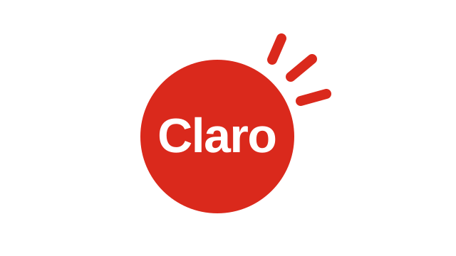

Proyecto SDA (Depósitos en Garantía)
Solicitud de Aclaración de Depósitos en Garantía: desarrollo del proceso de notificación de reporte de trámites no finalizados, pruebas unitarias, puesta a producción RRC, análisis del reporte SUPTEL OPE y creación de queries en Oracle para los distintos escenarios detectados.